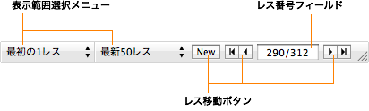

特定のレスに移動する
特定のレスに移動する
ナビゲーションバーを使用して、すばやくレスを移動したり、表示範囲を切り替えることができます。

- 表示範囲選択メニュー
- 一度に表示するレス数を選択します。これらの設定はスレッドごとに記憶されます。
- レス番号フィールド
- ここをクリックしてレス番号を入力し、return キーを押すと、そのレス番号にすばやく移動できます。
- レス移動ボタン
- 「New」をクリックすると、すぐに新着レスに移動できます。また、ブックマークしておいたレスに素早く移動したいときにも、レス移動ボタンが使用できます（ブックマークされたレスが前後に無い場合は、最初／最後のレスに移動します）。
ヒント：レスを移動する操作は、「スレッド」メニューの「レスに移動」サブメニューからも実行できます。